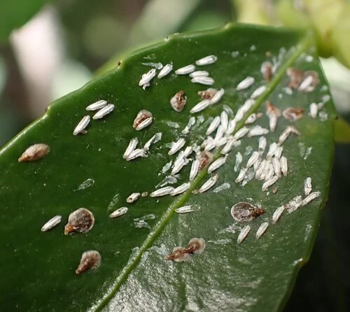

扶芳藤枝叶覆满白色短线，叶片出现黄点
卫矛矢尖蚧能在常绿密植丛中悄悄扩散。显眼的白色短线与不易察觉的褐色壳状物是同种害虫的不同形态。叶片和荫蔽处枝条都需检查。

先看哪里
拨开扶芳藤或常绿卫矛的枝叶，选一根变黄枝梢，用放大镜检查中脉、叶背和相连的树皮。
确认线索
找细长白色雄蚧壳和较大的褐色牡蛎壳状雌蚧壳。严重时可在枝叶上形成结壳，受害枝还会落叶。
相似症状
白粉病形成浅表粉层。蚧壳有清楚轮廓且形状不止一种，附近叶片还常有细小黄色取食斑。
处理方法
受害集中时可剪除结壳严重的枝条。判断范围前要检查内膛受遮蔽的茎，只看外层显眼叶片可能漏掉虫群。
如何复查
在当地孵化期复查原先干净的新叶，并寻找枝上移动的微小若虫。虫死后旧蚧壳仍可附着，不能只靠旧壳判断活跃程度。